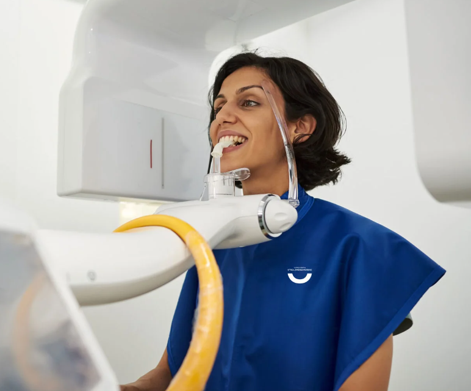
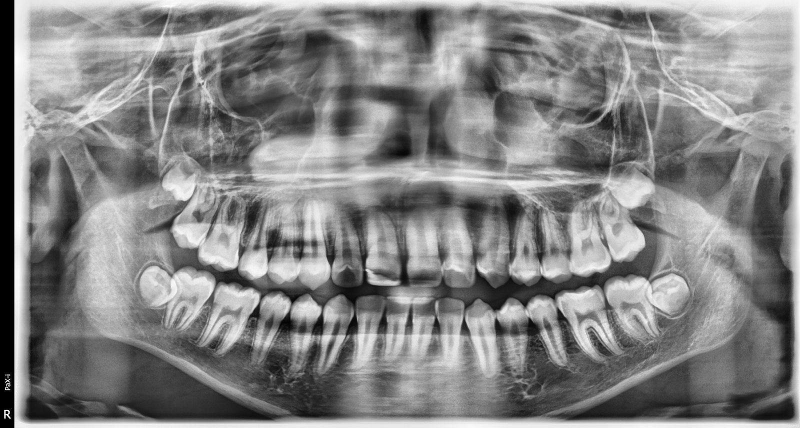
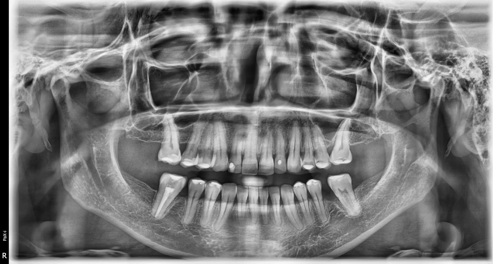
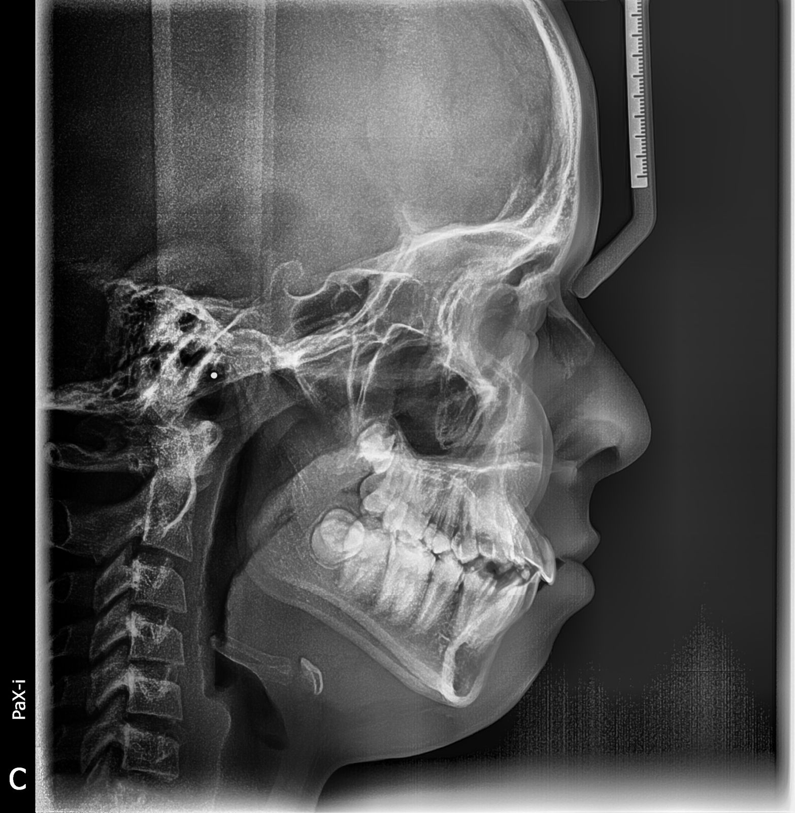
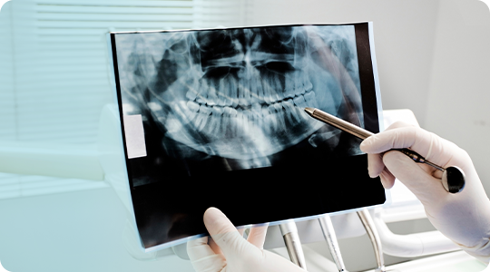

Ofrece los servicios de radiología digital de la zona craneofacial con imágenes de alta calidad impresiones de modelos, fotografía clínica, análisis cefalómetrico entre otros servicios.
.png)

Servicios
Radiografías Digitales 2D
- Radiografía Panorámica Dental
- Cefalograma Lateral o Radiografía Lateral de Cráneo
- Radiografía ATM (Comparativa) PA y Lateral
- Radiografía de Mano (Carpo)
- Radiografía Waters (Senos Paranasales)
- Cefalograma Frontal (PA)


Trazados cefalométricos para la planeación de tratamientos de ortodoncia.
- Metodos de:
- Ricketts
- Steiner

¿Tienes Alguna Duda?
Revisa nuestra sección de preguntas frecuentes
La radiografía dental es la herramienta diagnóstica más utilizada por los dentistas en la práctica clínica regular, permite visualizar imágenes del interior del cuerpo y evaluar lesiones del complejo buco-maxilofacial. Es una parte fundamental de la mayoría de los tratamientos odontológicos.
Primero, se lo ubicará en el centro de la unidad donde el técnico cuidadosamente ubicará y asegurará su cabeza. La unidad puede ser ajustada para acomodar al paciente parado o sentado en una silla de ruedas. Luego se coloca un protector bucal en su boca para asegurar el alineamiento adecuado de los dientes. La ubicación correcta de los dientes y la cabeza es importante para obtener una imagen clara.
Se le pedirá que se mantenga muy quieto mientras el brazo rotativo viaja en un semicírculo alrededor del perímetro de su cabeza, y las imágenes están siendo tomadas. Este proceso, por lo general, dura entre 12 a 20 segundos.
El examen por rayos X panorámicos no requiere ninguna preparación especial. Se recomienda agendar una cita para esperar su visita y obtener una atención más rápida, y una mejor experiencia. Durante su visita, únicamente se requiere que el paciente se remueva accesorios metálicos como cadenas, aretes y lentes que puedan interferir en la adquisición de las radiografías.
Estaran en cuestion de minutos ya que las imagenes se envian automaticamente a una computadora y se imprimen.

.png)